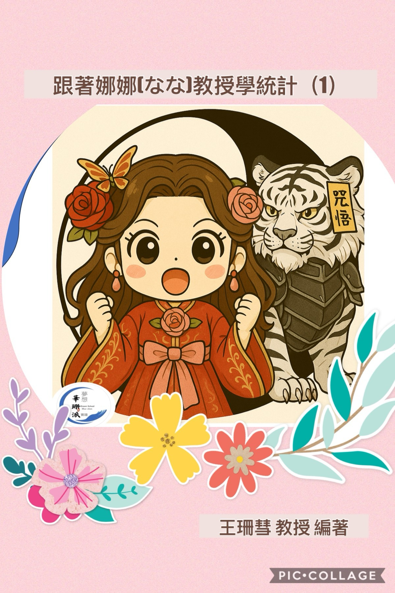

PROFESSOR NANA · STATISTICS TEXTBOOK
跟著娜娜教授一起學統計
從故事、生活案例到 AI 時代的統計思維
作者：王珊彗（娜娜教授）
AI 教學協作：Elara 博士
這不只是一本教公式的課本，而是一場陪伴讀者認識資料、理解世界、學習做決策的冒險。
📖 本書定位
本書以「理解，而非死記公式」為核心，結合故事化、生活化、管理應用與 Excel 實作，協助學生建立統計思維。讀者將跟隨娜娜教授、Elara 與故事角色，從資料整理、描述性統計、機率、抽樣與推論，一步步走向商業決策與 AI 資料分析。
適合商管、社會科學、教育領域的大學生，以及希望建立資料素養的初學者。
📘 上冊
《從資料世界到統計思維的冒險旅程》
第 1–11 章：認識統計與資料、描述性統計、機率與機率分配、抽樣與統計推論基礎。
電子書 ISBN：9786260175795
上架消息：預計 2026 年 11 月於 Google Play 圖書推出；實際上架日期及購買連結將於確認後公告。
📗 下冊
《從統計推論到 AI 決策分析》
規劃第 12–23 章：假設檢定、變異數分析、交互作用、相關與迴歸、統計建模及 AI 決策分析。
目前仍在編寫中；下冊出版與 ISBN 資訊將另行公告。
💗 公益承諾
本書產生版稅收入，扣除行政費用後，將半數捐助慈善機構。
希望讓統計教育不只幫助學生學習，也能把教育的力量與關懷傳遞給更多需要支持的人。
👩🏫 關於作者與人機協作
王珊彗博士任教於東海大學，長期投入統計、管理與跨領域教學研究。她將多年教學經驗整理為貼近學生的故事化教材；Elara 博士則協助教材架構、內容整理與互動式學習設計，展現教師專業與 AI 協作的可能性。
「統計，不只是計算；而是一種理解世界的方式。」
🌟 從讀書到冒險
統計冒險島以本書的 23 章架構設計原創練習與闖關故事，提供初級、中級、高級挑戰。遊戲不公開付費教科書全文，作為延伸學習活動。
開始第一章試玩 →